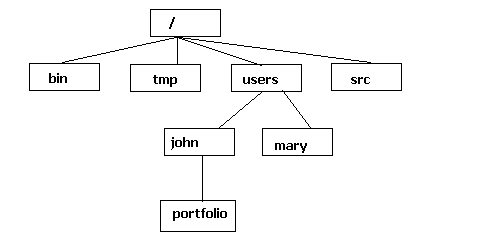
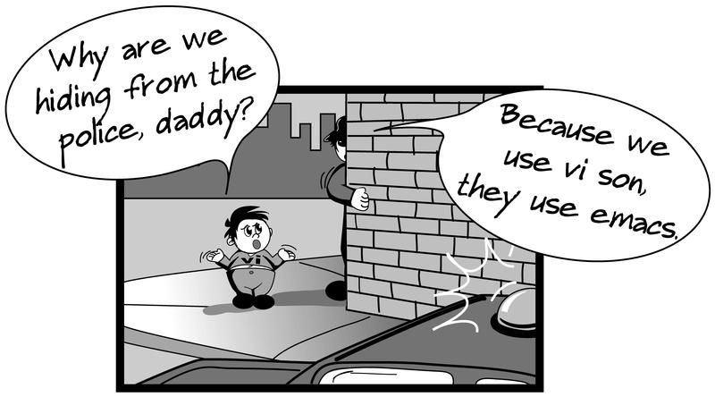
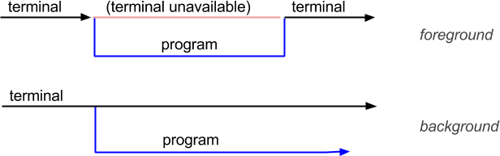

UNIX development
- C / C++ Linux software development is based on the GNU
gcc&c++compilers - The C / C++ Linux compilers are command-line ones, therefore there is not any GUI to ease code programming and compilation
- There are GUI-based IDEs (Integrated Development Environments) like KDevelop, that integerate all the necessary development tools (compiler, debugger, ...)
The gcc compiler
Syntax:
$ gcc ficfonts.c -g -c file.c -o fileExec
-I <dirIncludes> -L <dirLibs> -l <library>
- Where:
-g: Generates debugging information-c: Link only the specified file-o: Output executable file (defaults toa.out-I: Directories where .h files will be searched-L: Directories where libraries will be searched-l: Library to be linked with the program
The gcc compiler
Examples:
# Compile and link the source.c file, getting a a.out executable:
$ gcc source.c
# Compile and link the source.c file, getting a myExe executable:
$ gcc source.c -o myExe
# Compile only the source.c file, getting a source.o object:
$ gcc -c source.c
# Link the object files main.o and file1.o getting the main executable:
$ ld main.o file1.o -o main
# Compile and link the file source.c, adding definitions.h,
# that is in the /usr/local/include directory,
# and the libfont.so library getting a myExe executable:
$ gcc -g source.c -o myExe -I /usr/local/include -i definitions.h \
$ -L /usr/local/lib -lfont
make
- The
makecommand is used to organize the linking and compiling steps of complex programs that have several different modules or libraries - When this command is executed, a new executable file is created compiling only the modified files since the last compilation
- A
makefilefile must be created, that specifies the dependencies between different files and the linking and compilation method - Syntax:
$ make [-f makefile_name] [-arg_opt] [exe_name]
make
makefilefile:
main2: main2.o reverse.o statistic.o
gcc main2.o reverse.o statistic.o -o main2
main2.o: main2.c statistic.h
gcc -c main2.c
reverse.o: reverse.c reverse.h
gcc -c reverse.c
statistic.o: statistic.c statistic.h reverse.h
gcc -c statistic.c
Execution:
$ make
gcc -c main2.c
gcc -c reverse.c
gcc -c statistic.c
gcc main2.o reverse.0 statistic.o -o main2
Debugging
- To debug Linux programs, GNU provides a command-line debugger called
gdb - The
xxgdbprogram provides a GUI for this debugger:
$ xxgdb myExe &
- However, to debug complex programs formed by multiple processes, these debuggers may be extremelly difficult to use
- In these scenarios, we can print log messages to the standard output:
fprintf(stdout, "Current line: x=%d, y=%d.\n", x, y);
fflush(stdout);
- It is important to call
fflush(stdout)to ensure that the buffer is flushed and its content printed
Error control
- Some system and library calls use the
errnoglobal variable, defined in theerrno.hlibrary, to identify the cause when there is an error - This variable value is relevant only when the call returns an error (usually the
-1code) - For more information:
$ man errno - A descriptive error message identified by
errnocan be seen using theperrorfunction of the<stdio.h>library:
void perror(const char*);
- First the message is shown and then the error:
perror("My message");
My message: No such file or directory
Pointers
- A pointer is a variable that contains a memory address
- Usually, this address is the position of another variable. In this case, it is said that the first variable points to the second one
#include <stdio.h>
#include <stdlib.h>
void main() {
int num = 5;
int *p = #
printf("Num: %d, &p: %p, *p: %d\n", num, p, *p);
exit(0);
}
Pointers
- Syntax:
<element type> *<point variable name>;
- Examples:
char *pname; // Pointer to char
int *page; // Pointer to int
float *pheight; // Pointer to float
struct userData *pdata; // Pointer to struct
void *pgeneric // Pointer to any type
Pointers
- The operators that can be used with pointers are:
*: Returns the contents of a variable or operand&: Returns the memory address of the operand->: Allows to access the fields of a struct from its pointer
Pointers
- The operations with pointers:
- Assignation (
=): Assigns an address to a pointer - Comparation (
==,!=): Equalty or inequalty - Initialization (
NULL): Indicates that the pointer contains no address - Increment (
++), decrement (--): Change a pointer to the next / previous element of a series (for example, an array) - Indexed (
[]): Access to the n element of a series
- Assignation (
Pointers
#include <stdio.h>
void main() {
int n1, n2; int *p1, *p2;
n1 = 3; n2 = 10; p1 = p2 = NULL; // variable initialization
p1 = &n1; p2 = &n2; // p1 points to n1 and p2 points to n2
if(p1 != p2) {
printf("p1 and p2 point to different memory positions\n");
printf("Content of p1 is: %d\n", *p1);
printf("Content of p2 is: %d\n", *p2);
}
p2 = p1;
if(p1 == p2) {
printf("p1 and p2 point to the same memory position\n");
printf("Content of p1 and p2 is: %d\n", *p1);
}
}
Pointers
About common errors in pointers usage:
- Do not use uninitialized pointers (no valid address or
NULLvalue) - Ensure that the pointer points to a valid address before using it and initialize with a
NULLvalue the ones that do not have an assigned address yet /* Incorrect version */ #include <stdio.h> void main() { int x; int *p; x = 10; *p = x; }/* Correct version */ #include <stdio.h> void main() { int x,y, *p; p = NULL; x = 10; y = 20; if(p == NULL) p = &x; *p = y; }
Dynamic memory management
- The dynamic memory allocation allows to create variables during the program execution
- The necessary space for these variables is obtained from the available memory
- The functions that allow the dynamic allocation are
malloc()andfree() - Each time a memory request is done via
malloc(), a portion of the available memory is assigned. - When the
free()function is called, the memory is released
Dynamic memory management
mallocsyntax:
<pointer_var> = malloc(<memory_block_size>);
Example:
- Correct command syntax
- Brief explanation of how it works
- Options
- Working examples

$ man passwd
$ man open
Command help
- Typical
mancommand items:- NAME: Descriptive name
- SYNOPSIS: Command syntax or format. Optional arguments are between brackets
[] - DESCRIPTION: Explanation of what the command does. If the command includes arguments, they are also explained here.
- EXAMPLES: Usage examples
- SEE ALSO: Related man pages
manpages are distributed in sections. Useful to search information or when a command and a system call have the same name
$ man printf
$ man 3 printf
$ man -s3 printf
Command help
mansections:- 1 Executable programs or shell commands
- 2 System calls
- 3 Library routines
- 4 Special files (like devices in the /dev directory)
- 5 File formats
- 6 Games
- 7 Macro packages
- 8 System administration commands
- 9 Kernel routines
Locating commands
- It is possible to locate binary files, fonts and man pages with the
whereiscommand:
$ whereis man
/usr/bin/man
- It is possible to obtain the location of a command or system call inside the man page files using the
aproposcommand:
$ apropos sudo
sudo(8) - execute a command as another user
sudoers(5) - list of which users may execute what
visudo(8) - edit the sudoers file
Basic information commands
dateto obtain current date and time
cal [month] [year]to obtain a calendar
$ cal
Octubre 2014
di di di dm di di di
1 2 3 4
5 6 7 8 9 10 11
12 13 14 15 16 17 18
19 20 21 22 23 24 25
26 27 28 29 30 31
whoto obtain all logged in users
whoamito obtain the current user id
UNIX file systems
- The file system is the structure used by the OS to organize and store information
- It usually has:
- Files: A file is a collection of information that is stored in a disk
- Directories: Used to organize files in groups. They contain files or other directories
- Special files: Represent devices attached to the system
- character special files and block special files
File links
- Links are an ordinary file type. Its objective is to create a new name for a specific file
- Once a link has been created, it allows to access the linked file the same way as its content was copied to another one, with the advantage that it was not actually copied
Filesystem structure
- A UNIX filesystem follows a hierarchical tree structure, where branches are directories and leaves are files
- "
/" specifies the root node of the hierarchy

UNIX filesystem structure
/bin,/sbin: commands/etc: system configuration files/root: home directory of the root user/lib: necessary libraries used by commands/dev: device files/tmp: temporal directory/boot: system boot files/mnt: temporal device mount point/var: editable application parts/proc: runtime system information/home: main directory for normal system users/usr/local: self-compiled or third party programs
UNIX filesystem structure
- Special directories:
- "
." refers to the current directory - "
.." refers to the parent directory - "
$HOME" refers to main user directory
$ cd $HOME $ cd ~
- "
Paths
- To work or access a file / directory in UNIX, its path must be specified. There are two types of paths:
- Absolute paths: Specify the full path from the root directory (
/home/jordi/docs/file) - Relative paths: Specify the path from the current directory (
docs/file)
- Absolute paths: Specify the full path from the root directory (
- The
$PATHenvironment variable specify the paths used by the OS to execute a command
$ echo $PATH $ set PATH=./:$PATH; export PATH
Directory commands
pwdto obtain the current directorycdto go to a target directorymkdirto create a new directoryrmdirto delete an empty directory
File protection
- UNIX allows to control who can access its files by using permissions associated to each file / directory
- There are three types of users:
- Owner: The user who has created the file
- Group: Groups of users usually related
- Others: Any other system user
- For each one of these users, there are three access modes (permissions):
- Read [r]: Gives access to see the contents of the file or to list files inside the directory
- Write [w]: Allows to change the content of the file or to create / delete files
- Execution [x]: Allows to execute the file or command or allows to search inside a directory
File protection
rwxr-xr--
Owner read/write/exec permissions
Group read/exec permissions
Other read permission
File protection
- To change file / directory permissions the
chmodcommand is used
$ chmod [who] operation permissions file
- Where:
who: user type- u: owner
- g: group
- o: others
- a: all (u+g+o)
operation:+to add or-to removepermissions: permission type (r: read, w: write, x: exec)
File protection - Example
#Initial file permissions
--xrwxr-x
# Add r+w to owner
$ chmod u+rw file1
# Remove x to others
$ chmod o-x file1
# Remove w+x to group
$ chmod g-wx file1
# Add w to all users of file1
$ chmod a+w file1
rwxrwxr-x
rwxrwxr--
rwxr--r--
rwxrw-rw-
Directory contents
- The
lscommand shows directory contents
$ ls [OPTIONS] [FILE]
- Options:
-a: list all files (including hidden)-l: extended information-s: shows the file size-R: recursive listing
Directory contents
-l):
- File type:
- d: directory
- -: file
- Permissions:
- r: read
- w: write
- x: execution
- Number of links to file
- Owner's name
- Group name
- Size
- Date and time of last modification
- File name
Metacharacters
- Metacharacters are special symbols that allow to define patters to specify system objects (files, directories, ...)
- Some of this patterns:
*: any character string?: any single character[]: a list or range of characters
- Examples:
$ ls *a # End with 'a'
$ ls fic? # Start with 'fic' plus any other character
$ ls [0-9]* # Start with a number
File visualization
- The
catcommand is used to concatenate files and show its contents - The
morecommand is used to show the file contents - Examples:
$ cat file1
$ more file1
q to exit
space to jump to next page
return to go to next line
Redirections
- All commands, programs and processes have an associated standard input and output
- Keyboard is standard input and terminal is standard output
- These default assignations can be modified by using the
<,>and>>redirection commands
>redirects standard output to a file. If it exists, it's overwritten. If not, it's created<redirects standard input from a file>>redirects standard output to a file, adding content instead of overwriting it
$ ls ../ > file.txt
$ command < file.txt
$ ls ../ >> file.txt
File manipulation
- The
cpcommand is used to copy files
$ cp file1 file1_copy
- The
mvcommand is used to move files
$ mv file1 ../
- The
rmcommand is used to remove files
$ rm file1_copy
Warning: In UNIX deleted files can't be recovered!
- The
touchcommand is used to create an empty file
$ touch new_file
File distribution
- To distribute files and programs, UNIX has the
tarandgzipcommands - With
tar, multiple files can be packaged into a single one. Withgzip/gunzipthe file can be compressed or decompressed. The-zoption oftarallows to also compress the resulting packaged file
$ tar -cvf file.tar f1 f2 f3 # Package f1, f2 and f3 into a single file
$ tar -cvf dir_file.tar directory # Package all directory files
$ gzip file.gz file # Compress
$ gunzip file.gz # Decompress
$ tar -czvf dir.tgz dir # Package and compress a directory
$ tar -xzvf dir.tgz # Unpack and decompress a directory
File edition
- There are different options to edit files in UNIX
- One of the most used text-based editors is
vi/vim - Another one is
emacs - There are other gui-based editors:
gedit,kedit,textedit, ...

Other commands
- The
echocommand writes its arguments to standard output
$ echo $PATH
- The
historycommand shows a list of previously executed commands identified by a number - The
![num]command executes the[num]command of the previous list - The
dfcommand shows information of the mounted filesystems - The
quotashows information about the users' free/used disk
Command execution
- A command or job can be executed in foreground or background
- When a job is executed in foreground, it takes control of the terminal until it finishes its execution
- However, if the execution is done in background, the terminal keeps free to use before the process is finished. To execute a job in background, a
&must be put in the end of the command
$ cp * /tmp/ &

Process control
- To remove a running command (process) prematurely:
- If the process is running in foreground mode, it can be finished typing
Ctrl + C - If the process is running in background mode, the
killcommand is used
- If the process is running in foreground mode, it can be finished typing
$ kill [-s signal] pid
$ kill 666
$ kill -9 666
Running processes information
- To see the running processes the
pscommand is used - This command lists running processes, showing:
- Process
pid(identifier) - Parent process
pid - Process name
- Process
- To show all processes the
-eoption is used - To show process from a specific user the
-uoption is used
$ ps -e
$ ps -u root
Program location
- To execute a program its location is needed
- The location can be specified explicitly by typing the absolute path:
$ /usr/bin/touch new_file
- If the absolute path is not given, the OS searches in all the directories defined in the
PATHvariable - To get a program path the command
whereiscan be used
$ whereis touch
touch: /bin/touch /usr/bin/touch /usr/bin/X11/touch
<That's all!>